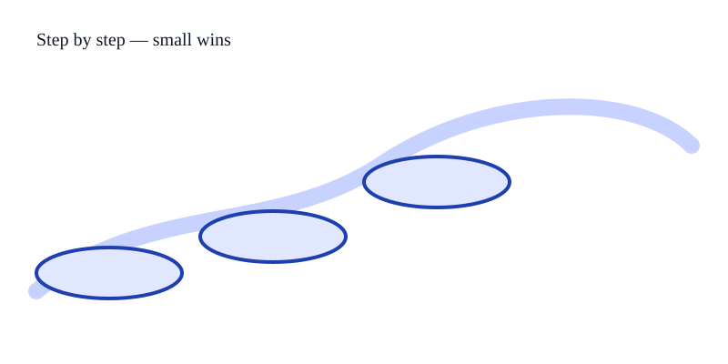

Build Confidence
Small exercises, journaling progress, and celebrating tiny victories like "Hello World" help embed learning.
You don’t have to be fearless — you just have to start. Practical steps, supportive resources, and inspiration for new learners.

Common sources: fear of failure, imposter syndrome, lack of exposure, and cultural stereotypes. These feelings are normal — they're starting points, not stop signs.
Small exercises, journaling progress, and celebrating tiny victories like "Hello World" help embed learning.
Community and mentorship accelerate progress — freeCodeCamp, StackOverflow, local meetups.
Coding unlocks creativity and career options. Start small and teach others as you grow.